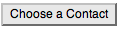
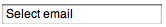
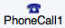
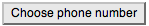
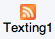

Social Components - App Inventor for Android
Table of Contents
ContactPicker
Use a contact picker component to let the user choose an entry from the Android contact list.
A contact picker is a button that displays a list of contacts to choose from when the user taps it. After the user has made a selection, the following properties are set:
-
ContactName: contact's name. -
EmailAddress: contact's primary email address. -
Picture: name of the file containing the contact's image, which can be used as aPictureproperty value for theImageorImageSpritecomponent.
Other properties affect the appearance of the button (including
TextAlignment
and
BackgroundColor
) and whether it can be
tapped (
Enabled
).
Properties
-
Enabled - If set, user can tap contact picker to use it.
-
Image - Image to display on contact picker
-
BackgroundColor - Color for contact picker background.
-
ContactName - Name of selected contact.
-
EmailAddress - Primary email address of selected contact.
-
Picture - Picture of selected contact.
-
FontBold - If set, contact picker text is displayed in bold.
-
FontItalic - If set, contact picker text is displayed in italics.
-
FontSize - Point size for contact picker text.
-
FontTypeface - Font family for contact picker text.
-
Text - Text to display on contact picker.
-
TextAlignment - Left, center, or right.
-
TextColor - Color for contact picker text.
-
Visible - If set, contact picker is visible.
-
Width - Contact picker width (x-size).
-
Height - Contact picker height (y-size).
Events
-
AfterPicking() - Called after user picks a contact.
-
BeforePicking() - Called after user taps contact picker but before contact list is displayed.
-
GotFocus() - Contact picker became the focused component.
-
LostFocus() - Contact picker stopped being the focused component.
EmailPicker
Use an email picker component to let the user enter a user's email address from the Android contact list.
An email picker is a text box in which a user can begin entering an email address
of a contact and be offered auto-completion. The initial value of the box and the
value after user entry is in the
Text
property. If the
Text
property is initially empty, the contents of the
Hint
property will be faintly shown in the text box as a hint to the
user.
Other properties affect the appearance of the email picker (including
TextAlignment
and
BackgroundColor
) and whether it can be
used (
Enabled
).
Email pickers are usually used with a button. The user taps the button when text entry is complete.
Properties
-
Enabled - If set, user can tap email picker to use it.
-
BackgroundColor - Color for email picker background.
-
FontBold - If set, email picker text is displayed in bold.
-
FontItalic - If set, email picker text is displayed in italics.
-
FontSize - Point size for email picker text.
-
FontTypeface - Font family for email picker text.
-
Text - Initial text to display in email picker.
-
TextAlignment - Left, center, or right.
-
TextColor - Color for email picker text.
-
Hint - If Text property is empty, Hint is shown in gray.
-
Visible - If set, email picker is visible.
-
Width - Email picker width (x-size).
-
Height - Email picker height (y-size).
Events
-
GotFocus() - Email picker became the focused component.
-
LostFocus() - Email picker stopped being the focused component.
PhoneCall
Use this component to dial the phone and make a call.
PhoneCall
is a non-visible component that makes a phone call to the
number specified in the
PhoneNumber
property, which can be set either
in the Designer or Blocks Editor. You can use the
MakePhoneCall
method
to make a phone call programatically from your app.
This component is often used with the
ContactPicker
component, which
lets the user select from the contacts stored on the phone and sets the
PhoneNumber
property to the contact's phone number.
To directly specify the phone number, set the
PhoneNumber
property to
a
Text
with the specified digits (for example, "6505551212"). The
number can be formatted with hyphens, periods, and parentheses; they are ignored.
You can't include spaces in the number.
Properties
-
PhoneNumber - Phone number to dial.
Methods
-
MakePhoneCall() -
Dials the number specified by the component's
PhoneNumberproperty.
PhoneNumberPicker
Use this component to allow users to choose a phone number from a list of Android contacts' phone numbers.
When the user taps a phone number picker button, it displays a list of the phone numbers of contacts to choose from. After the user has made a selection, the following properties will be set to information about the chosen contact:
-
ContactName: contact's name. -
PhoneNumber: contact's selected phone number. -
EmailAddress: contact's primary email address. -
Picture: name of the file containing the contact's image, which can be used as aPictureproperty value for theImageorImageSpritecomponent.
Other properties affect the appearance of the button (including
TextAlignment
and
BackgroundColor
) and whether it can be
tapped (
Enabled
).
Properties
-
Enabled - If set, user can tap phone number picker to use it.
-
Image - Image to display on phone number picker.
-
BackgroundColor - Color for phone number picker background.
-
ContactName - Name of selected contact.
-
EmailAddress - Primary email address of selected contact.
-
PhoneNumber - Selected phone number of selected contact.
-
Picture - Picture of selected contact.
-
FontBold - If set, phone number picker text is displayed in bold.
-
FontItalic - If set, phone number picker text is displayed in italics.
-
FontSize - Point size for phone number picker text.
-
FontTypeface - Font family for phone number picker text.
-
Text - Text to display on phone number picker.
-
TextAlignment - Left, center, or right.
-
TextColor - Color for phone number picker text.
-
Visible - If set, phone number picker is visible.
-
Width - Phone number picker width (x-size).
-
Height - Phone number picker height (y-size).
Events
-
AfterPicking() - Called after user picks a phone number.
-
BeforePicking() - Called after user taps phone number picker but before phone number list is displayed.
-
GotFocus() - Phone number picker became the focused component.
-
LostFocus() - Phone number picker stopped being the focused component.
Texting

A component that will, when the
SendMessage
method is called, send the text message specified in the
Message
property to the phone number specified in the
PhoneNumber
property.
If the
ReceivingEnabled
property is set to 1 messages will not be received. If
ReceivingEnabled
is set to 2 messages will be received only when the application is running. Finally if
ReceivingEnabled
is set to 3, messages will be received when the application
is running and when the application is not running
they will be queued and a notification displayed to the user.
When a message arrives, the
MessageReceived
event is raised and provides the sending number and message.
An app that includes this component will receive messages even when it is in the background (i.e. when it's not visible on the screen) and, moreso, even if the app is not running, so long as it's installed on the phone. If the phone receives a text message when the app is not in the foreground, the phone will show a notification in the notification bar. Selecting the notification will bring up the app. As an app developer, you'll probably want to give your users the ability to control ReceivingEnabled so that they can make the phone ignore text messages.
If the GoogleVoiceEnabled property is true, messages can be sent over Wifi using Google Voice. This option requires that the user have a Google Voice account and that the mobile Voice app is installed on the phone. The Google Voice option works only on phones that support Android 2.0 (Eclair) or higher.
To specify the phone number (e.g., 650-555-1212), set the
PhoneNumber
property to a Text string with the specified digits (e.g., 6505551212). Dashes, dots, and parentheses may be included (e.g., (650)-555-1212) but will be ignored; spaces may not be included.
Another way for an app to specify a phone number would be to include a
PhoneNumberPicker
component, which lets the users select a phone numbers from the ones stored in the the phone's contacts.
Properties
GoogleVoiceEnabled- If true, then SendMessage will attempt to send messages over Wifi using Google Voice. This requires that the Google Voice app must be installed and set up on the phone or tablet, with a Google Voice account. If GoogleVoiceEnabled is false, the device must have phone and texting service in order to send or receive messages with this component.
Message- The message that will be sent when the SendMessage method is called.
PhoneNumber- The number that the message will be sent to when the SendMessage method is called. The number is a text string with the specified digits (e.g., 6505551212). Dashes, dots, and parentheses may be included (e.g., (650)-555-1212) but will be ignored; spaces should not be included.
ReceivingEnabled- If set to 1 (OFF) no messages will be received. If set to 2 (FOREGROUND) or3 (ALWAYS) the component will respond to messages if it is running. If theapp is not running then the message will be discarded if set to 2(FOREGROUND). If set to 3 (ALWAYS) and the app is not running the phone willshow a notification. Selecting the notification will bring up the appand signal the MessageReceived event. Messages received when the appis dormant will be queued, and so several MessageReceived events mightappear when the app awakens. As an app developer, it would be a good idea to give your users control over this property, so they can maketheir phones ignore text messages when your app is installed.
Events
MessageReceived(text number, text messageText)- Event that's raised when a text message is received by the phone.
Methods
SendMessage()- Send a text message
This component allows users to interact with Twitter.
This non-visible component enables communication with Twitter. Once a user has logged in ( Authorize ) and the login has been confirmed successful by the IsAuthorized event, you can use the following methods:
- Search Twitter for tweets or labels (
SearchTwitter). - Set the status of the logged-in user (
SetStatus). - Send a direct message to a specific user (
DirectMessage). - Receive the most recent direct messages (
RequestDirectMessages). - Follow a user (
Follow). - Unfollow a user (
StopFollowing.) - Get the list of users who follow the logged-in user (
RequestFollowers). - Get the most recent messages in the user's timeline. (
RequestFriendTimeline). - Get the most recent mentions of the logged-in user (
RequestMentions).
In general, you invoke one of these methods and the result will become available when the corresponding receipt event is signaled. For example, if you call RequestFollowers , then the FollowersReceived event will be signaled when the list of followers is available. This might take time, because the request is going over the web; the result might even never become available if, for example, your device is not connected to the web or the Twitter web site is down.
Login is handled using the OAuth protocol, as required by the Twitter API ( dev.twitter.com/pages/auth ). An App Inventor app that needs to make Twitter API calls on behalf of an authenticated user should first call Authorize . This loads a Twitter login page that will allow the user to login with their username and password, and then return appropriate credentials to the Twitter component in the app. Once the Twitter component has the credentials the IsAuthorized event is raised to let the app know that it can proceed with Twitter API calls. An app retains Twitter credentials across invocations, so it may not be necessary for the user to login each time he or she uses the app. Reinstalling an app will clear the credentials, as will calling the DeAuthorize method. A user can revoke authorization for an app from the Twitter web site via the Settings page as well. To check whether an app already has valid credentials, use the CheckAuthorized method.
Important: Most of the operation of the OAuth protocol is hidden inside the Twitter component and you do not need to understand how it works to use the component. However, it is necessary for anyone building an app with the Twitter component to supply a Consumer key and a Consumer secret as properties of the component. These are text strings specific to your app that you can obtain by registering the app with Twitter at twitter.com/oauth_clients/new . On the registration page you will need to supply the following information:
- Application name
- A unique name for your application. When you submit the form It will warn you if the name isn't unique. This name will be shown to the user of your app when they are asked to login to Twitter as a result of the app calling the
Authorizemethod. - Description
- A description of your app.
- Application website
- The website where a user can go to find out more about your app or download it, if there is one. Otherwise, you could give your home web site, or another web site. The field cannot be left blank.
- Application type
- This should be set to Browser .
- Callback URL
- A valid URL. The value doesn't matter since the Twitter component will set it to the proper value.
- Default access type
- Set this to read/write
- The other fields can be left blank if you like. When you have successfully registered your app you'll see a page that displays Consumer key and Consumer secret text strings that are specific to the registered app. You can copy these into the corresponding Twitter component properties in your App Inventor app. If you want to change the settings for your app at a later time, login to Twitter via a web browser and go to twitter.com/apps to see and modify your registered apps.
-
Properties
-
ConsumerKey - The consumer key identifying this app, obtained from twitter.com/oauth_clients/new as described above.
-
ConsumerSecret - The consumer secret identifying this app, obtained from twitter.com/oauth_clients/new as described above.
-
DirectMessages - User's direct messages on Twitter.
-
Followers - User's list of Twitter followers.
-
FriendTimeline - User's Twitter message timeline.
-
Mentions - List of messages that mention the user.
-
SearchResults - Results of Twitter search query.
TwitPic_API_Key-
Username - The user name of the authorized user. Empty if there is no authorized user.
Events
-
DirectMessagesReceived(list messages) - Called when all the direct messages requested with
RequestDirectMessageshave been retrieved. -
FollowersReceived(list followers) - Called when all the followers requested with
RequestFollowershave been retrieved. -
FriendTimelineReceived(list user-messages-list) - Called when the timeline requested with
RequestFriendTimelinehas been retrieved. Each element is itself a list whose first element is a username and whose second element is a status tweeted by that user. -
IsAuthorized() - Called after the program calls
Authorizeif the authorization was successful. It is also called after a call toCheckAuthorizedif we already have a valid credentials. After this event has been raised, any other method for this component can be called. -
MentionsReceived(list mentions) - Called when all the mentions requested with
RequestMentionshave been retrieved. -
SearchSuccessful(list searchResults) - Called when the search requested with
SearchTwitterhas been completed.
Methods
-
Authorize - Presents a Twitter login page so that the user can authorize access. IsAuthorize will be called when the user successfully grants access to the app.
-
CheckAuthorized - Checks whether we already have access, and if so, causes IsAuthorized event handler to be called.
-
DeAuthorize - Removes authorization from this running app instance. A user will have to login again to use any Twitter method.
-
DirectMessage(text user, text message) - Sends the specified message to the given user.
-
Follow(text user) - Start following the given user.
-
RequestDirectMessages() - Retrieves the most recent direct messages.
-
RequestFollowers() - Retrieves the list of the user's followers.
-
RequestFriendTimeline() - Retrieves the 20 most recent messages in your timeline. Returns a list of tuples (sub-lists), where each tuple contains a username and status message.
-
RequestMentions() - Retrieves the most recent mentions of the user.
-
SearchTwitter(text query) - Searches Twitter for the given text.
-
SetStatus(text s) - Post the specified text as a status message.
-
StopFollowing(text user) - Stop following the given user.
Tweet(text status)- This sends a tweet as the logged-in user with the specified Text, which will be trimmed if it exceeds 160 characters.
Requirements: This should only be called after the
IsAuthorizedevent has been raised, indicating that the user has successfully logged in to Twitter. TweetWithImage(text status, text ImagePath)- This sends a tweet as the logged-in user with the specified Text and a URL to the uploaded image on TwitPic, which will be trimmed if it exceeds160 characters. If an image is not found or invalid, only the text will be tweeted.
Requirements: This should only be called after the
IsAuthorizedevent has been raised, indicating that the user has successfully logged in to Twitter.
-